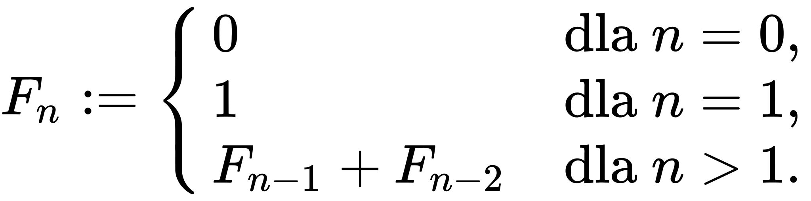
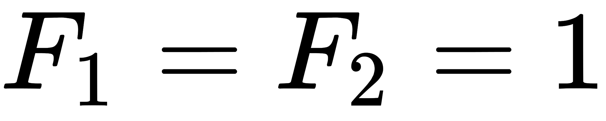
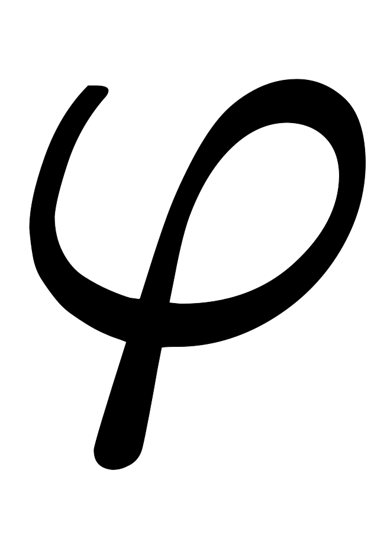

Jest to ciąg liczb naturalnych określony rekurencyjnie. Pierwszy wyraz jest równy 0, drugi jest równy 1, każdy następny jest sumą dwóch poprzednich.

Kolejne wyrazy tego ciągu nazywane są liczbami Fibonacciego. Zaliczanie zera do elementów ciągu Fibonacciego zależy od umowy - część autorów definiuje ciąg od 
Złota spirala a spirala Fibonacciego
Prawdopodobnie większość z Was słyszała o złotej spirali w kontekście liczb Fibonacciego. Jest to szczególny przypadek spirali logarytmicznej, w której współczynnik b jest stałą zależną od  - tzw. "złotej liczby". Charakterystyczne w takiej spirali jest to, że co 90 stopni jej szerokość zwiększa się (lub zmniejsza) dokładnie razy.
Złota spirala jest bardzo podobna do spirali Fibonacciego różni je jednak zasadniczy szczegół. O ile złota spirala zmierza do swego bieguna (punktu centralnego), ale NIGDY go nie osiąga (biegun ten leży w obszarze nieskończoności), o tyle spirala Fibonacciego zmierza do swego bieguna i go osiąga w punkcie zero. Niektórzy rozpoczynają ciąg Fibonacciego od zera, a inni od liczby jeden - jak ponoć robił to sam Fibonacci. Dla wygody obliczeń posłużymy się tutaj zerem, pamiętając, że święta geometria zaczyna swe liczenie od jedynki - symbolu Jedni (jedności wszystkiego co istnieje). Tak czy inaczej jeżeli chodzi o złotą spiralę, to jej biegun leży o obszarze nieskończoności i w tym sensie złota spirala nie ma swego początku. Natomiast spirala Fibonacciego ma swój początek leżący w punkcie zero.
Poniższa spirala jest przykładem spirali Fibonacciego. Spirala reaguje na ruch myszką, można zmieniać przybliżenie i obrót spirali względem układu współrzędnych.
Geneza
Włoski matematyk, później znany jako Fibonacci tak naprawdę urodził się jako Leonardo da Pisa w 1175 roku. W tamtych czasach Europa wykorzystywała rzymski system zapisywania liczb. Bardziej skomplikowane obliczenia wymagały liczydła i wielu handlarzy musiało konsultować się z ekspertami by obliczać ilości i koszta. Młody Leonardo uczestniczył w podróżach ze swoim ojcem, podczas których poznał arabskich i indyjskich matematyków, oraz ich systemy liczbowe.
Gdy wrócił do Pizy w 1202, Fibonacci wydał swoją pierwszą książkę o numerach, zwaną "Liber Abaci", czy inaczej "Książkę kalkulacji", w której zaprezentował arabskie liczby od 0 do 9. Początkowo, jedynie znajomi matematycy rozumieli książkę Fibonacciego, więc ten wydał prostszą wersję dla handlarzy, przez co rozpowszechnił ją po całej Europie.
W "Liber Abaci", Fibonacci przedstawia następujący problem: jeśli para królików rodzi parę królików raz na miesiąc, przy czym każda para, którą wydadzą na świat również może rodzić parę królików po miesiącu życia, ile królików urodzi się w rok, zaczynając od jednej pary? Odpowiedź znajduje się w sekwencji liczb, która zaczyna się od 1,1,2,3,5,8 i dalej, dochodząc do 377 par do końca roku. Brzmi znajomo? Wbrew powszechnemu przekonaniu, Fibonacci nie jest wynalazcą tej sekwencji liczb. Uczeni z Indii badali tą zależność w poprzednim wieku zanim Fibonacci wydał "Liber Abaci", ponieważ jednak to on rozgłosił to zagadnienie w Europie, kojarzone jest ono z nim. To francuski matematyk Edouard Lucas nadał nazwę "ciągu Fibonacciego" w późnych latach 1800.
Ciąg Fibonacciego w życiu
Jak wcześniej wspomniałem, z ciągiem Fibonacciego jest związana niezwykła zależność - tzw. "złota liczba", lub też "złota proporcja". dzieląc dowolną liczbę ciągu przez liczbę ją poprzedzającą otrzymamy wynik oscylujący wokół 1,61804 – liczby zapisywanej w greckim alfabecie jako . Platon uważał, że liczba ta może być kluczem do Wszechświata, a w starożytnych pismach często uważana jest ona nie tylko za Złotą lecz również Boską Liczbą, pozwalającą na uporządkowanie chaotycznego wszechświata.
Ta banalna z pozoru zależność w rzeczywistości opisuje cały szereg zjawisk występujących w przyrodzie, począwszy od roślin aż po kształt galaktyk.
W kształtach wielu roślin widać spiralne linie rozchodzące się od środka w niezwykle usystematyzowany sposób. Rośliny rozwijając się wypuszczają kolejne pędy z jednego centralnego punktu (np. łodygi) rozchodząc się pod kątem. Kąt ten to w przybliżeniu ok. 13,5 stopnia w stosunku do wcześniejszego zawiązka.
Jest to tak zwany Złoty Kąt, który wyznacza kierunek rozwoju roślin. Jak się okazuje on również zawiera w sobie ciąg Fibonacciego – jest to złota proporcja dla podziału okręgu.
Poniżej można znaleźć galerię przedstawiającą przykłady ciągu Fibonacciego w naturze.

{kind=link}
{kind=link}
{kind=link}
{kind=link}
{kind=link}
{kind=link}
{kind=link}